No.001
小龍龜
開門的小籽，形制靈巧，龜甲紋路清楚，適合作為隨身把玩小件。
- 重量
- 約 19 g
- 尺寸
- 35*2*15 mm
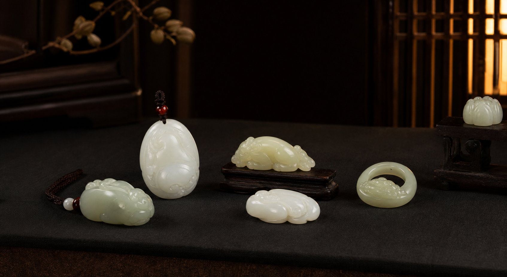
私人收藏記錄
把每一件收藏的照片、來歷、尺寸與心得好好保存，慢慢累積成自己的小型藏品圖錄。
收藏筆記
這裡可以整理和田玉、文玩與其他珍藏。每件作品都能記錄名稱、類別、材質、尺寸、入手日期與故事， 之後回看時，不只看到物件，也看得到當時選中它的理由。
新增收藏
收藏圖錄
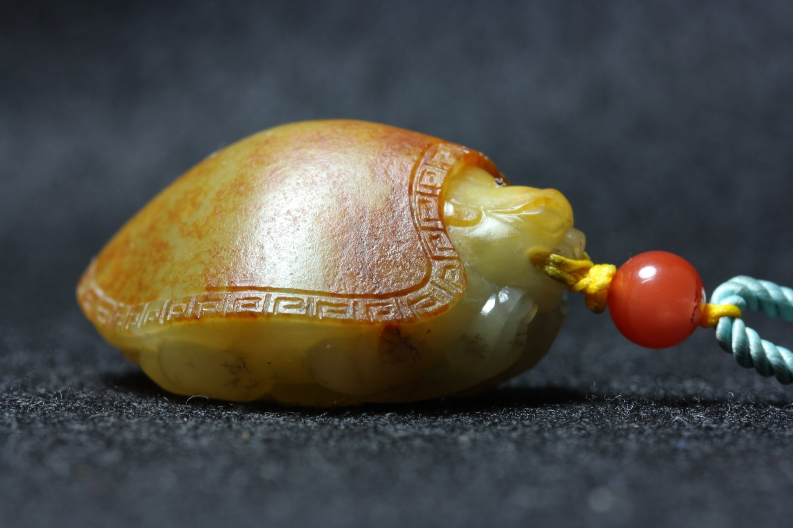
No.001
開門的小籽，形制靈巧，龜甲紋路清楚，適合作為隨身把玩小件。
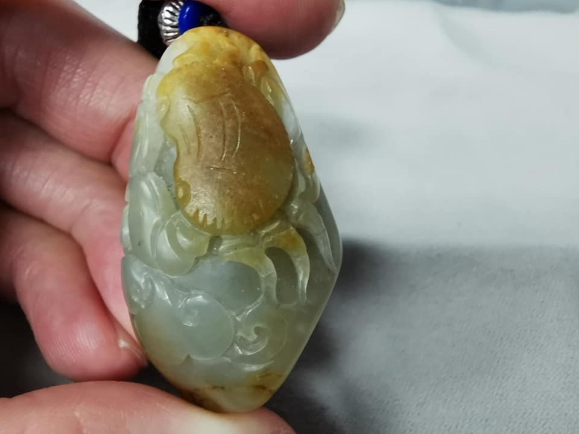
No.003
獨籽雕刻掛墜，黃皮巧雕螃蟹趴在如水般的玉石如意、靈芝上，寓意八方來財。
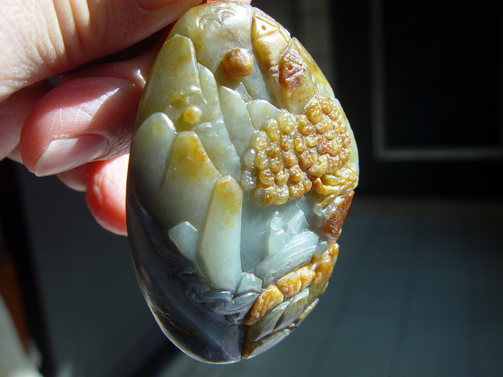
No.007
新疆和田玉青花籽料，玉質細膩油潤，獨籽雕刻，開門毛孔皮色，器型飽滿的大把件。
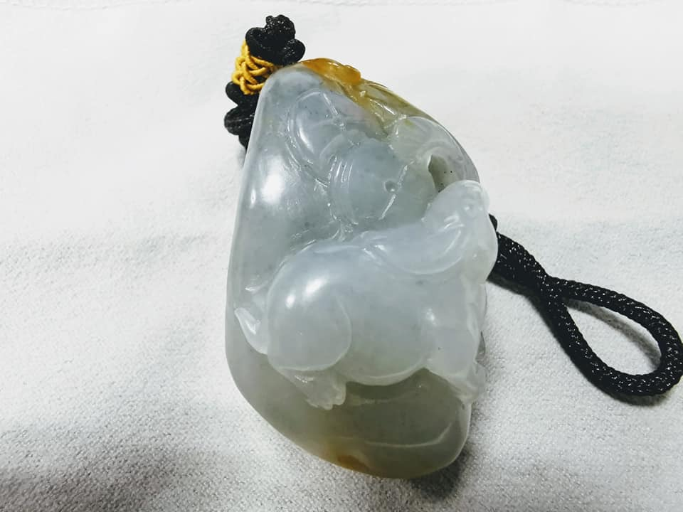
No.012
獨籽滿肉，打燈通透肉質細膩，正面巧雕玉兔、金錢、靈芝，上方刻有如意。
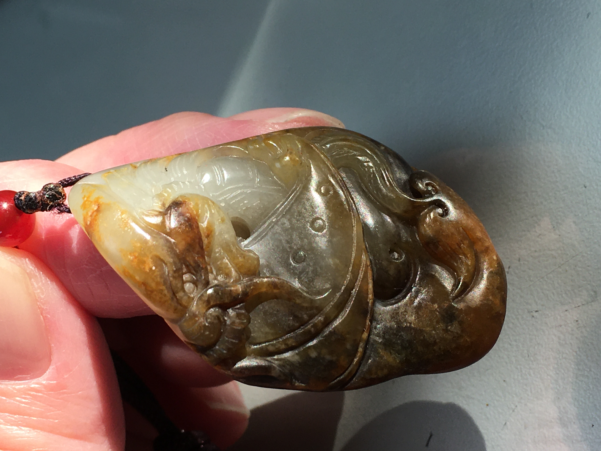
No.014
白肉底黃沁獨籽雕刻，脂粉佳油性十足，毛孔清晰皮孔開門，純手工雕刻龍。
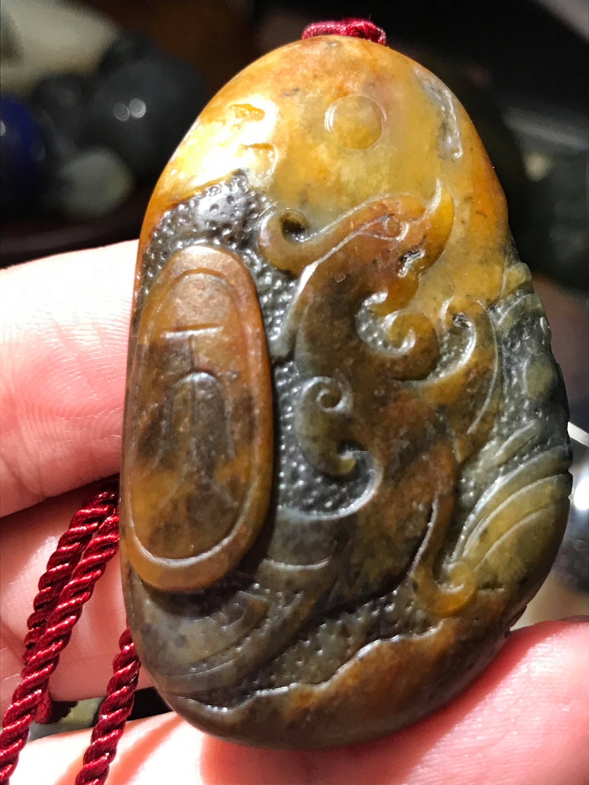
No.015
紅沁、青玉底，料子老氣脂粉佳、油性十足，手工仿古雕刻龍與銅錢。
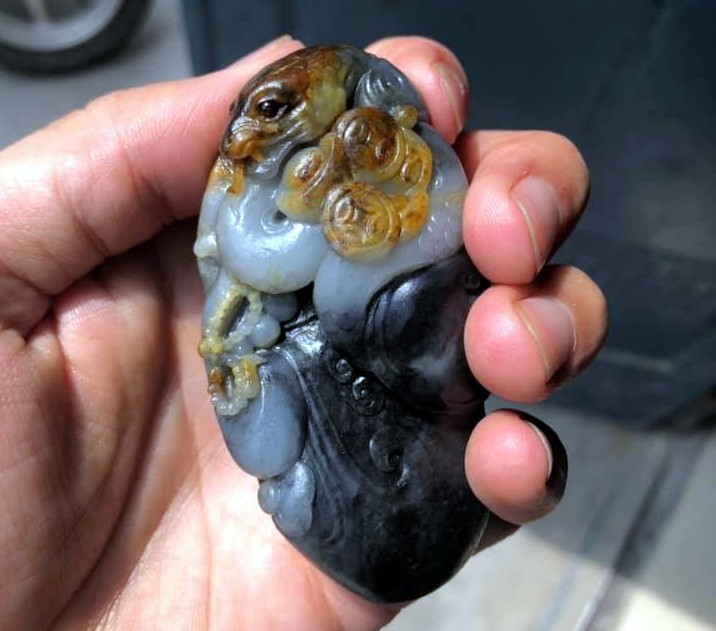
No.025
青花籽料，三色籽料巧雕，工藝與料子都不错。
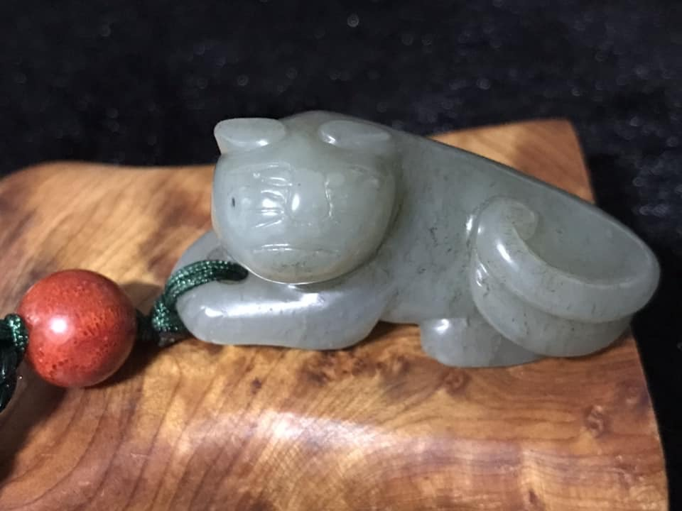
No.026
新疆和闐籽料早期作品，型制古樸十分有味，皮殼包漿漂亮，獾音同歡取其吉意。
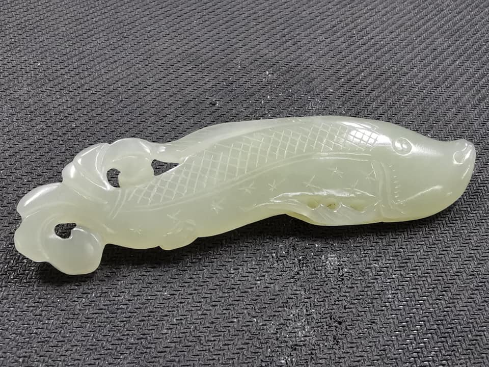
No.027
早期青白玉魚佩飾，玉魚雕得靈動悠遊，皮殼及包漿老味十足，油潤可愛。
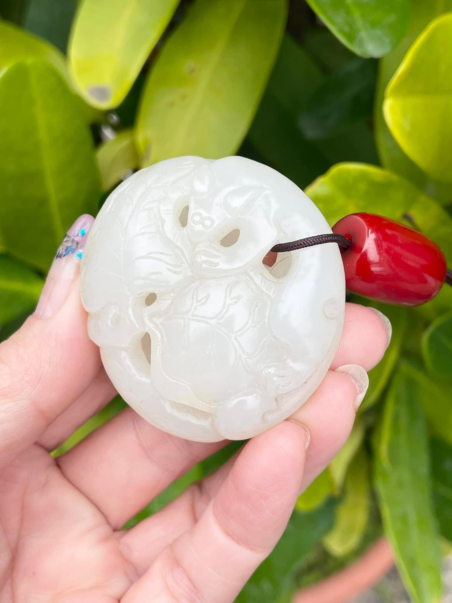
No.031
脂白和田松鼠葡萄鏤空雕件，玉必有工，工必有意，意必吉祥。
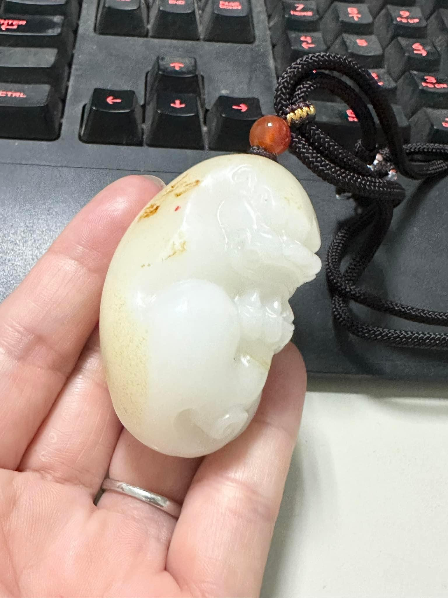
No.041
白玉回首貔貅，皮色優、型好霸氣，手抱如意，寓意招財又如意。
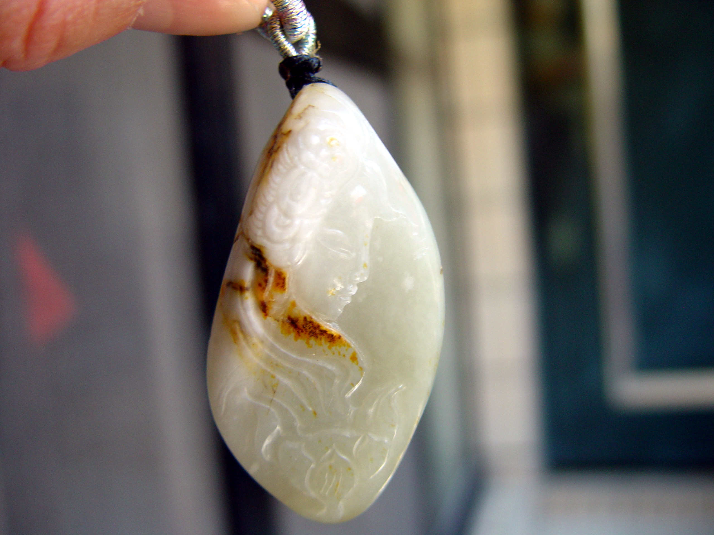
No.042
新疆和田獨籽料巧雕觀音，利用側臉後方雞骨白與沁色雕出頭髮、髮飾。